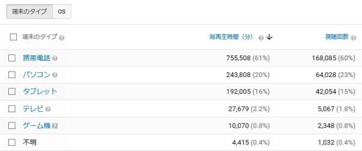

| まん坊の浮遊【下巻】：YouTubeアフィリエイトで稼ぐ！100日間挑戦記 | |
| まん坊 | |
| UNKNOWN (2017) | |
下巻発刊にあたり
本書「まん坊の浮遊」は上巻と下巻からなる2冊で構成されています。
上巻では、YouTubeアフィリエイト挑戦初月～2カ月目に当たる2017年2～3月の模様をご覧頂けます。
準備期間から動画初投稿、初収益獲得を獲得するもなかなかそこから収益額が伸びずリアル底辺ユーチューバーぶりをさらけ出しています。
※もし、上巻の方をお読みでなければそちらを先に御一読して頂くと、より下巻の内容を理解してお楽しみ頂けますので強くお勧めします。
さて、下巻では3ヶ月目から目標の100日目である2017年4月～5月上旬頃までの様子をご覧頂きます。
はたして、リアル底辺ユーチューバーのまま底を這いずり回っているのか？
それとも浮遊することができるのか？
それでは『下巻』、お楽しみください！
目次
【 実践記 】 そして 5 月になりました （90～100 日目 )
【実践記】3ヶ月目（60～89日目)
YouTubeが面白くなってきました！
3月31日に、国内の話題を取り上げたBチャンネルの「とある動画」が1000ページビューを超え、それまで1日での最高収益が200円にも届かなかった収益がなんといきなり785円となりビックリしました！
というのが、上巻の最後の最後での出来事でした。
そして期待を膨らましつつ、翌日その動画がどんな再生回数をたたき出したかというと、
二桁の再生回数に落ち着いてしまいました・・・。
やっぱり、しょせん一日天下(←使い方間違ってないか？)でした。このようなトレンド系の動画は瞬間最大風速はありますが、その名の通り「瞬間」で終わってしまうということがよく分かりました。
しかしながら、この日(4月1日)のAdsenseの管理画面では収益こそ151円ながらページビュー数は先日ほどではないにしろ、やはり1000回を超えています。
さらに翌日の2日にはページビュー数が2000回を超えているではありませんか！？
各チャンネルのアナリティクスを見てみると、先月半ばに開設したもっとも新しい『〇〇話』のCチャンネルが今のところ累計動画投稿数は50個強くらいなのですが、ここ数日のうちに投稿した2つの動画が関連動画に表示されていて、ひとつは『自動再生』になっていたのです！
パソコンですと関連動画の一番上に表示されるサムネイルの動画です。
視聴者側でOFFにすることもできるのですがデフォルトではONなので、テレビをつけっ放しにするかのごとくYouTubeをつけっ放しで延々自動再生してるって人がかなりの割合でいるのです。
自動再生の破壊力、半端ないです！！
そして、トレンド系のように失速することなく、4日には収益325円。
「ハハハ、さすがエイプリルフール。これが本当なら冗談抜きに今月1万円いくんじゃないの？」
僕にとってYouTubeが一気に面白くなってきました。
今月の目標を決めました
そして実践64日目となる4月5日には3000PVを超えて752円。
アナリティクスを確認してみたのですが、Cチャンネルで再生回数の伸びている二つの動画再生回数がこの日は共に1000回越えで、いちばん再生回数の伸びている動画は累計再生回数が1万回を突破していたんです！
ちなみにその動画を投稿したのは8日前です。
もちろん著名ユーチューバーさん方は1日でウン十万回再生されるのでそれと比べればハナクソみたいなものですが、つい1週間前までは頑張ってもせいぜい1日300回程度だった僕にとってはたったの数日で1万回再生ってスゴイことだと思ったのです。
そして、この数字はまだまだ伸びそうな気がします。
「今月1万円いくんじゃないの？」なんて思っていたのが冗談ではなくなってきました。
始めたころは100日間の内で月間の目標金額を考えるなど思いもよりませんでしたが、ここで今月の目標金額を決めました！
『3万円』です。
2万円ってなんとなく中途半端感があるし・・・。
別に目標達成できなかったら何かペナルティーがある訳でもないので、キリよく1日平均1000円として今月は3万円を狙うことにしました！！
そして2日経った実践66日目(4月7日)には予想通り1日の収益が1000円を超えました。それもいっきに1600円。
こんな感じで4月上旬はCチャンネルが波に乗って、文字通り右肩上がりで再生回数・収益が急上昇していきました。
総再生数1万回未満のチャンネルでは広告が表示されない
このころ、YouTubeからこんなアナウンスがありました。
"YouTubeへの広告掲載申請を行った新規のクリエイターは自分のチャンネルの総再生数1万回を超えたあと、我々はチャンネル上でポリシーに違反するような活動がないかをチェックします。すべてクリアすると、動画上で広告を表示可能となります。
この新しい敷居(チャンネルの総再生回数1万回超)を設けることで、ルールに従っているクリエイターだけが収益を確保できるようになります。"
要約するとこんな感じの内容です。
さて僕は総再生回数1万回をクリアしているしているのはCチャンネルのみですが、現状でこのチャンネルがほぼすべての収益を上げているので取り合えず大きな影響はなさそうです。
他のチャンネルをチェックしたところ、この時点ではこれまで通り特に問題のない動画は収益化されたままになっていましたが、現在では収益化マークが消えてこのような表示が確認できます。
この新ルールによって新規参入者は1万再生回をクリアする必要がある訳ですが、僕の場合では早くから複数のチャンネルで展開してたのですが毎日コツコツと1日平均4動画程度を投稿し続けて全チャンネルを合わせても1万再生回数をクリアするまでに1カ月半ほど掛かっています。
実際のところ、1万再生回しても収益としては2000円にもなりません。普通は1000円くらいです。
ですので、「これからYouTubeで稼ごう！」と思っている人には単なる通過点でしかないのでさほど影響は出ないといったYouTube側の見方だそうですが、
僕の場合は少額ながら初動画投稿後数日から収益が発生して、それがモチベーションになってここまで続けてこれたという側面があるので、今後は参入しても1万再生回に届く前に挫折して収益 『0円』 のまま消えていくYouTubeアフィリエイターが激増するのではないかという予感はしています。
見方を変えれば、新規参入者であってもそこを乗り越えさえすれば他の新規参入者の数はグッと数が減るので以前よりもライバルが少なくなってむしろ有利ともいえますね。
チューバータウンに掲載されていた！？
実践75日目(4月16日)。
この日、ライバルチャンネルをチェックするのに上巻で触れた『チューバータウン』を久しぶりに訪問してみると、なんと僕のCチャンネルが掲載されていました！？
チューバータウンって結構有名なサイトだと思うのですが、ここに僕のチャンネルが掲載されたということは、底辺ユーチューバー脱出と思ってもいいのでしょうか？
サイトトップページの下の方にこんな感じで目立つように「掲載リクエスト」が投稿できるようになっているので、どなたか興味を持った方が僕のチャンネルをリクエストしてくれたんでしょうね！？
まぁ、この時点でのそこに書かれている実績は他と比べるとかなりショボいので少し気恥しいのですが、世間様からユーチューバーとして認めてもらったようでひとり悦に入っていました。
久しぶりにアナリティクスを見てみると
今や僕のメインチャンネルとなったCチャンネルですが初投稿から1ヶ月以上が経過してデータも貯まってきたことだろうとアナリティクスを見てみました。
ユーザー層
現在、注力していてほとんどの収益をもたらしているCチャンネルのユーザー層のグラフがこれです。
年齢層は中高年が多いようです。
性別はほぼ同じくらいでしょうか？
ちょっと比較してみようと思い、最近はまったく動画をアップしていませんが先月までは力を入れていた国内の時事ネタを扱ったBチャンネルのブラフです。
やはり一番多い年齢層は50歳前後で、比較的若い年齢層の方が多い感じですが、性別は8割以上が男性になっています。
特別男性受けするようなタイトルは狙っていないし、サムネイル画像に若い女性を使っている訳でもないんですけどね！？
どちらのチャンネルも特別、男性のみとか女性のみとか狙っている訳ではないのですがジャンルが違うとこうも違うものなのですね。
視聴者はどんな端末で見ているのか？
ふと「やっぱりみんなスマホでYouTube観てるのかなぁ？」と思いそちらもついでにチェック。
Cチャンネルでの表なのですが、

6割がスマホで2番目に多いパソコンが2割といった結果でした。
「スマホが多いだろうなぁ」とは思っていたのですが、パソコンに対してこんなに差があるとは思いませんでした。
やはり通勤時間とか、電車の待ち時間とかのちょっと空いた時間を活用している場面が多いのでしょうね。
ついでに『OS』は何が多いのかも見てみました。
以外と興味深いのはAndroidがiOSの倍近いことですね！？
日本ではiPhoneのシェアって50％くらいのはずなんですが？
iPhoneユーザーはあまりYouTubeを観ないってことなんですかねぇ？謎です。
チャンネル登録者数が増えています
さてこの間、再生回数や収益はどうだったのかというと実は平均1500円前後で小康状態でした。
この頃になるとあまり反応のない他のチャンネルは放置してCチャンネルにのみ動画投稿するようになり、以前同様平均4動画ほどを毎日このチャンネルに投稿していたのですが、むしろ直近の3日間は収益が落ち込み1000円を割る日もあったので、
「僕の力ではこのジャンルで稼げる上限は1500円くらいなのかなぁ？」
と思っていたのですが、嬉しいことに初投稿から1ヶ月ほどしか経っていないチャンネルにもかかわらずチャンネル登録者数が100名を超えたのです。
さらに、ここ3日間は毎日何かしらコメントもしてもらっていました。
2週間ほど前までは全然アクセスも集まらず、どうしたものかと思っていましたけどやっぱりコツコツ続けてみるもんですね。
この頃までのチャンネル登録者の推移はこんな具合でした。
そして、実践77日目(4月18日)日目にはむしろ落ち込んでいたはずの再生回数・収益が一気に上向き初の2000円越えとなる、2,592円に達しました。
別段、何か変わったことをした訳ではないのです。これまでと同じように粛々と作業を重ねただけです。
ともあれ、この日で何とか今月2万円を越え残りあと12日あることを考えると2,592円は出来すぎにしても平均2000円ほどをキープしていてくれれば今月の目標に立てた3万円をクリアできそうです。
さらに翌日・・・、過去最高を軽く更新しました！？
昨日2000円を超えたと思ったばかりなのですが、なんと4,817円！
さすがにビックリ仰天！！
「キツネにつままれたみたい」とはきっとこんな感じなんだと思いました。マジに。
どうやら一昨日投稿した内の動画ひとつが、また自動再生に表示されたようです。
毎日こんなに収益が上がれば最高ですけど・・・、
ぬか喜びはイケません。さすがにこれは出来すぎ。
『ま・ぐ・れ』に違いありません。
とはいえ、この夜は久しぶりにアルコールを口にしました。
YouTubeでアフィリエイト初心者脱出かな？
予想通り、翌日の結果はほぼ半分の再生回数・収益でした。
やっぱりまぐれでしたね。まぁ、このままズルズル下降線をたどるとヤバいですがそれさえなければOKです。
しかしながら、まぐれとはいえ5000円近い収益が出たおかげで4月21日にして3万円を突破しました！
あっさり、目標達成！？
この後も毎日2000円前後の収益をキープして4月26日には4万円を突破。
「あれ？ひょっとして今月5万円いってしまうかも？」そう思わずにはいられませんでした。
以前から僕には、「月5万円達成したらアフィリエイト初心者脱出」みたいなイメージがあったんですよ。
人によっては10万円がボーダーラインって方もみえるでしょうけど、誰が言い出したのかは知りませんがよく耳にする 「アフィリエイターの95％は月収5000円も稼げていない」ってのはクリアしましたしね。
ン？
ということは僕はアフィリエイターの中でも上位5%に入っているってことですか？
5万円だったら上位2%とか3%の中に入っているってこと？
いやいや、さすがにそれはないでしょう。トップアフィリエイターと言われる人達はひと月に数百万円もしくはそれ以上の金額稼いでいるそうですから(冷静に考えるととんでもない金額ですね！)。
そして4月末日の30日・・・、
やりましたー！！
達成しましたー！！！
先月4月は5万円越えの50,409円でした！

白状すると、YouTubeを始める前は「3ヶ月もやれば1万円くらい稼げるんじゃないの？」と内心は思っていたんです。
それがまさか、3か月目にして5万円稼げてしまうとは！？
この出来事は、僕の人生にとって忘れられない1ページになりそうです！
大袈裟ですかね？
けど、本当にうれしいしその金額を見たときは年甲斐もなく感動してしまいました。
なかなかこの歳になるとそういう経験って出来ないものなんですよ。
さあ、今夜も一杯飲めそうです。
4月度(実践60日目～89日目)まとめ
4月はCチャンネルがブレイクしてくれたおかげで大躍進の月となりました。
3月末日の収益785円はまぐれだったものの4月1日の151円から右肩上がりに数日後には1000円を突破して、月後半には2000円台突入。
これまたまぐれながら4,813円という日もあり、月初めにはまったく予想していなかった5万円に到達しました。
2月の日給 6.7 円から3月は日給 51 円に、そして4月は日給 1,680円に大幅アップしました！
何しろ4月は1日当たりの平均再生回数が3月の総再生回数とあまり変わりません。
収益に至っては１日平均の収益が3月1ヶ月で稼いだ金額を上回っています。
「アフィリエイトは始めてしばらくは作業しても作業しても稼げない日々が続くが、諦めないで続けているとある時を境に急に稼げるようになる。」と言われています。
それを肌で体感した1ヶ月でした。
【実践記】そして5月になりました（90～100日目)
チューバ―タウンの給与明細書
4月はまったく予想していなかった嬉しい結果となりましたが、おかげで挫折することなくこのままゴールの100日目までたどり着けそうな感じです。
いや、確信できますね。
願わくば100日目まで数字の落ち込みが無いことを期待して、
5月も粛々と作業に勤しみます。
さて、半月ほど前にチューバ―タウンにCチャンネルが掲載されていたことを知った訳ですが、「5月になったので、ひょっとして内容がアップデートされているかな？」と、久しぶりにチューバータウンを見てみたら...。
ちゃんとアップデートされていました。
どんなシステムになっているかは知りませんが「再生回数」や「チャンネル登録者数」などは頻繁にアップデートされているようで、『給与明細書』なるチューバータウン上で集計されていると思われる前月(4月)の詳細はこんな感じになっていました。
どうやって割り出しているのかわかりませんが「動画再生回数」が実際よりも少ない数字になっているので、「総支給金額」も実際の金額より少なくなっているようです。
どういう方法で計算しているんでしょうね？
他のチャンネルでも全体的に少なめに表示されるものなのかどうかは分かりませんけど。
いずれにしても前回見たとき、3月はショボい数字だったので、副業ユーチューバーとしてはちょっとは様になってきたのでは！？
テキストスクロール動画は『ゴミ動画』
ゴールデンウィーク真っ盛りの実践93日目、5月4日には作成した動画数は合計で300本を超えて301本。注力しているCチャンネルだけでもそのほぼ半分の152本になっていました。
初投稿以来、82日間で301本を投稿したことになります。
そしてこの時点でCチャンネルのチャンネル登録者数は300人を超えて342人にまで増えていました。
200人を超えてから10日間ほどで300人に達していたので、このところ平均すると毎日10名ほどの方にチャンネル登録して頂いていることになります。
チャンネル登録を促す機能として僕はずっと『ブランディング』しか使っていません。
他にも『カード』や『終了画面』といった機能があるので著名顔出しユーチューバーさん方の場合は、ほぼもれなくすべての機能を駆使しているチャンネルが多いようで、もちろん積極的に使えば使ったなりの効果は期待できると思います。
けれども、量産がマストのテキストスクロール動画の場合は、「そんなことをしている時間があるなら1つでも多くの動画を作った方がいい」という判断で、毎動画ごとに設置が必要なカードと終了画面の使用は避けていた訳です。
にもかかわらず、Cチャンネルに関しては初投稿から50日間ほどで300名を超すチャンネル登録を頂いたのでこれは正解だったと思っています。
ちなみに、テキストスクロール動画って一部では『ゴミ動画』とか『クソ動画』とか『うざい！』などと言われますが、なにもネタ元の話を何も考えずに動画化して量産している訳ではなくて、
あくまで僕の主観ですけど、ネタ候補を自分で読んでみて「面白い」と思えるネタだけを動画化しているので1本作るのに5～6個のネタ元を吟味することは珍しくありません。
氾濫している情報の中から「これは！」といったものをピックアップしてお届けしている感覚ですね。それなりに時間をかけて作業しているのです。
だからこそ300人を超えるチャンネル登録を頂けたのだと思っています。
母への誕生日プレゼント
5月に入ってから2万ページビュー、収益2千円以上をキープしていたのですが実践95日目の5月5日には初の4万ページビュー越えをしました！
その割に収益自体は4千円弱で、先月一度5千円近い日があったので過去2番目に多い収益となりました。
そしてこの日チャンネル登録に関しては、なんと1日で43人！！
1日でこの人数は過去最高です。
さらに何とその翌日、5月6日には6万プレビューを超えました！？
正確には64,358ページビューでした。
クリック率が悪くてこれまた収益そのものは大して伸びませんでしたが、それでも過去最高額の4,946円です。
サイトアフィリエイトとかでちょっと高額案件が売れたとかならともかく、副業ユーチューバーで1日約5千円ってすごくないですか！？
と興奮したものの、翌日には4万プレビューほどに落ち着きましたが・・・。
それでも先月を十分上回るペースです。
「このままゴールまで突っ走れれば！」と思っています。
ところで、僕が住んでいる所とは飛行機の距離にある実家の母親の誕生日が2か月ほど前にありました。
いつものごとくプレゼントなど何も送っていない上に、今年はLINEやメールをすることも誕生日翌日まで忘れていたので、「何万円かYouTubeで稼げたら、母親にささやかなプレゼントでも送ってみよう」とその時思っていたことを、ふとこの日思い出しました。
「稼げるようになってきたし、ネットで何か注文して贈ってあげよう」
・・・しかし、何を贈っていいのかさっぱり分かりません。
そして何となく照れくさい。
親子って結構そんなもんですよね？
結局、父親の銀行口座のメモが手元にあったので、その口座に奮発して1万円振り込みました。
その後、母親にLINEでメッセージを入れておきました。
「遅い誕生日プレゼントだけど、父の口座に1万円振り込んでおいたから二人で旨いものでも食べに行ったら。」と。
ついに実践100日目！！
とうとう迎えた100日目。
いつもと変わることなく粛々と3動画作成を作成して投稿。
100日間挑戦を無事終えることができました！
まずは11日間ではありますが5月に入ってからここまでの結果報告です。
平均のページビュー数は4万回弱で、収益は平均で3千円を超えているのでなんと月10万円レベルにもなっています！
そして100日間での結果ですが、あまりゴチャゴチャすると見ずらいので収益とプレビュー数だけですが。
合計動画投稿数は322本で、
合計収益89,278円でした。
1再生当たりの金額を計算すると、0.096円とわずかに0.1円を下回っていますがネット上でよく言われているように大体0.1円くらいだという結論に至りました。
ちなみに1クリック当たりは0.21円でした。
ところで、チャンネル登録者数はメインで動かしていたCチャンネルではなんと500名を超えていました！
途中からほったらかしになってしまったBチャンネルの方は15名でしたけど。
さて、この日はささやかながらスパークリングワインを買ってきて、我が家でお祝いのシングルパーティー(？)でした。
100日間を振り返って
YouTubeアフィリエイトを挑戦するにあたって当初、
「3ヶ月くらいやれば月1万円程度は稼げるだろう」
「いやいや、月5万円くらい稼げるかも」
「ひょっとして、月10万円くらい稼げちゃうかもよ」
と根拠のない期待が膨らむ一方で、
「3ヶ月くらい経っても数百円程度かも」
「そんなんじゃ、続かないよなぁ～」
「稼げるかどうかも分からないんだから止めとこうか」
とも思いました。
けれども、40代最後の思い出と言ったら大袈裟ですが何か挑戦しようと思い始めたのがこの『YouTubeアフィリエイトで稼ぐ！ 100日間挑戦記』でした。
5万円とか10万円とかの金額を目標にして始めても一向に稼げなかったら半年はおろか3ヶ月、いやいや1ヶ月程度で挫折してしまうかもしれない。
これまでの数年間いつもそうでしたから...。
けれども、期日を決めてその日までやり抜くことくらいは僕にでもきっとできるはず。
そう思ったのです。
実際のところYouTubeの実践のし易さと、作業を続けていれば少なからずしかし確実に収益が得られるAdsenseの仕組みが、続けてこれた大きな要因だったと思います。
おかげで途中サボって作業をしなかった日もありましたが何とか100日間『やり切る』ことができました。
ほんとにちっちゃなことですが、周りを見ても生活がマンネリ化してくるこの位の歳になるとなかなか自ら目標を立て挑戦する機会ってあまりないんですよ。
金額を見れば、若いアフィリエイターさんが始めて2～3ヶ月で100万円越えしていく話もちょくちょく耳にする昨今、それに比べたら全く自慢できるような実績ではありませんが「50近いオヤジでもこのくらいはできるんだ！」と、ちょっぴり誇らしく思っています。
また、「ネットの世界では40過ぎてから始めても稼げない」といった意見を耳にしたことがありますが、それが間違いだということも証明できたのではないかと思います。
本当にYouTubeアフィリエイトに挑戦してよかったです。
僕の人生という物語に、新しく「2017年、YouTubeアフィリエイト挑戦」という『目次』がひとつ加わりました。
おわりに
最後までお読みいただき本当にありがとうございました。
「へぇ～、YouTubeって本当に稼げるんだね！？」
「ネットで稼ぐとかって怪しそうと思ってたけど、そうでもないんだ。」
「私にもできそう！」
もしもそんな風に思って頂けたのなら、僕としてはとても嬉しい限りです。
この本でお話ししたのは、数あるアフィリエイトの種類の内のひとつにすぎないYouTubeアフィリエイト。
そのうちの100日間というたったひとコマです。
もちろん僕には101日目からの続きがありますし、どこかで一区切りついたら過去に挑戦しては挫折したいくつものアフィリエイト手法のいずれかにでも再挑戦したいと思っています。
まん坊はまだまだ浮遊し続けます。
なお、本書の続きとなる101日目以降のまん坊の経過、取り組みをメルマガにてお伝えしています。はたしてこの月、まん坊は10万円達成できたのか？メルマガ登録は
→ こちら
しがない副業アフィリエイターのまん坊が100日間YouTubeに挑戦した模様を【全暴露】するブログは
→ こちら
著者プロフィール
著者：まん坊
1968年生まれ。
独身、一人暮らし。
飲食業に従事する傍ら、転職を機に長年の「ノウハウコレクター」汚名返上のためにYouTubeアフィリエイトに挑戦。
著名ユーチューバーをはじめ、個人でも月数百万円もしくはそれ以上を稼ぐようなスーパーアフィリエイターに比べれば人様にお見せ出来るような『実績』など無いに等しい副業アフィリエイター。
しかし、実績はなくてもその『取り組んでいる姿』であればお見せ出来るし、その様に興味を持って読んで頂ける方もいるのではないかとの思いから本書を刊行。
今後も、まん坊なりの取り組みを情報発信していきます。
なお、本書の続きとなる101日目以降のまん坊の経過、取り組みをメルマガにてお伝えしています。はたしてこの月、まん坊は10万円達成できたのか？メルマガ登録は
→ こちら
しがない副業アフィリエイターのまん坊が100日間YouTubeに挑戦した模様を【全暴露】するブログは
→ こちら